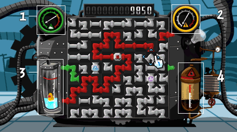
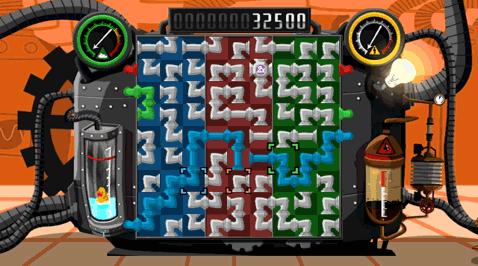

5 |
Gameplay |
 |
|
Heron: Steam Machine is a game about a factory where rubber duckies are being produced by a large steam engine. On this steam engine, there are four different gauges which you will have to watch carefully.
 These gauges represent steam (1), electricity (2), water (3) and oil (4). When the gauges start to rise, you will have to connect a pipe with the color corresponding with the gauge. Green pipes for steam, yellow ones for electricity, the blue pipes for water and the red ones for oil. Gauges will only rise when an entry and exit point of the same color appears on the screen. By connecting the pipes, you will earn points and relieve some of the pressure, keeping the machine running just a little bit longer! If one of the gauges reaches its maximum, the machine will eventually blow up, and the game is over. If you were lucky enough to achieve a high-score, make sure you enter your name in the list so other players can compete with you!  In Multiplayer, you are able to cooperate with friends in maintaining the steam machine. When you play with two, three or four players, the screen is divided into sections with different background colors. Each player is able to solve his or her own part of the puzzle. Players are restricted to their own section of the screen, so you will have to work together to make the pipes fit properly! |
 |
 |
 |